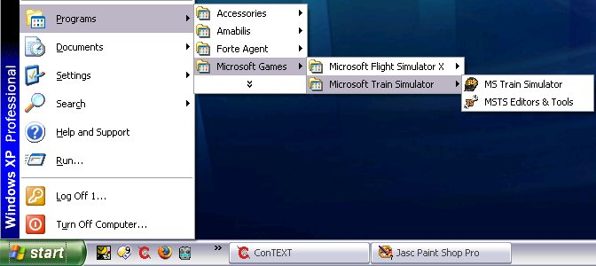
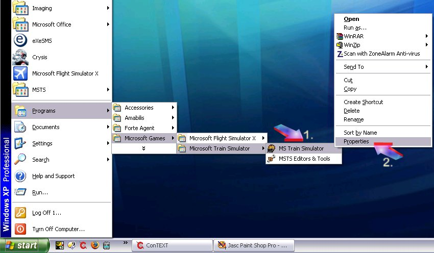
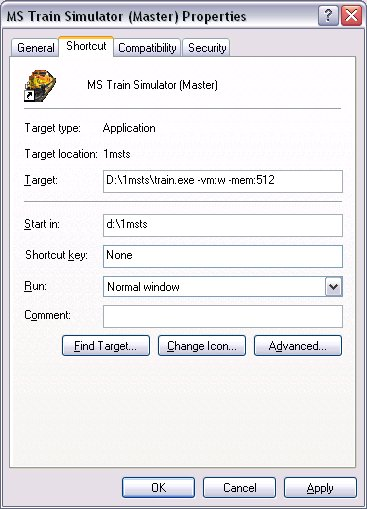
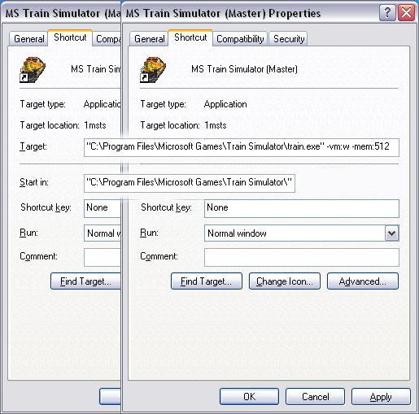

When you install MSTS, you end up with two shortcuts, one for the simulation, one for the Editors and Tools, thus:

If you right-click on these links (arrow 1) and select Properties (with a left-click - arrow 2),

you will end up with a window that looks something like this (my MSTS is not in the default folder, so your window may vary from this):
No matter, you are only going to change the end of the line in the "Target" field. Do not alter the drive or path: for a default installation of MSTS, this line will probably read "C:\Program Files\Microsoft Games\Train Simulator\launcher.exe" and "C:\Program Files\Microsoft Games\Train Simulator\launcher.exe" -runeditor for the Editors and Tools. Note: you need to enclose the folder name and exe file within double quotes if there are spaces in the folder name (as there are in the default installation).
Backspace everything until you have removed launcher.exe.
Then.......
| If you want to..... | . | then use this shortcut..... |
| To Play the Simulation in Full Screen | | train.exe -mem:nnn |
| To Play the Simulation in a Window | | train.exe -vm:w -mem:nnn |
| To Use the MSTS Editors & Tools | | train.exe -toolset -mem:nnn |
where nnn is the amount of memory you wish to allocate to MSTS.
For example: to start MSTS with 512MB memory, memory use:
- train.exe -mem:512 for playing MSTS full-screen or
- train.exe -vm:w -mem:512 for playing MSTS in a window or
- train.exe -toolset -mem:512" for Editors and Tools.
You should end up with something like this (this is for 512MB of memory in MSTS played in a window):

If you're using default folders, ensure the folder name and exe are enclosed in double quotes, thus (composite image):

You can use as much memory as you want, but it should not exceed one-half of physical PC memory (eg for a 1G-equipped PC, use -mem:512 as the switch; for a 2G or higher machine use -mem:1024 (MSTS will only ever use a maximum of 1024MB, so there is no point in placing a higher figure in the switch).
Test to establish the best value for your system. Most people report there seems to be little or no improvement beyond 512MB.